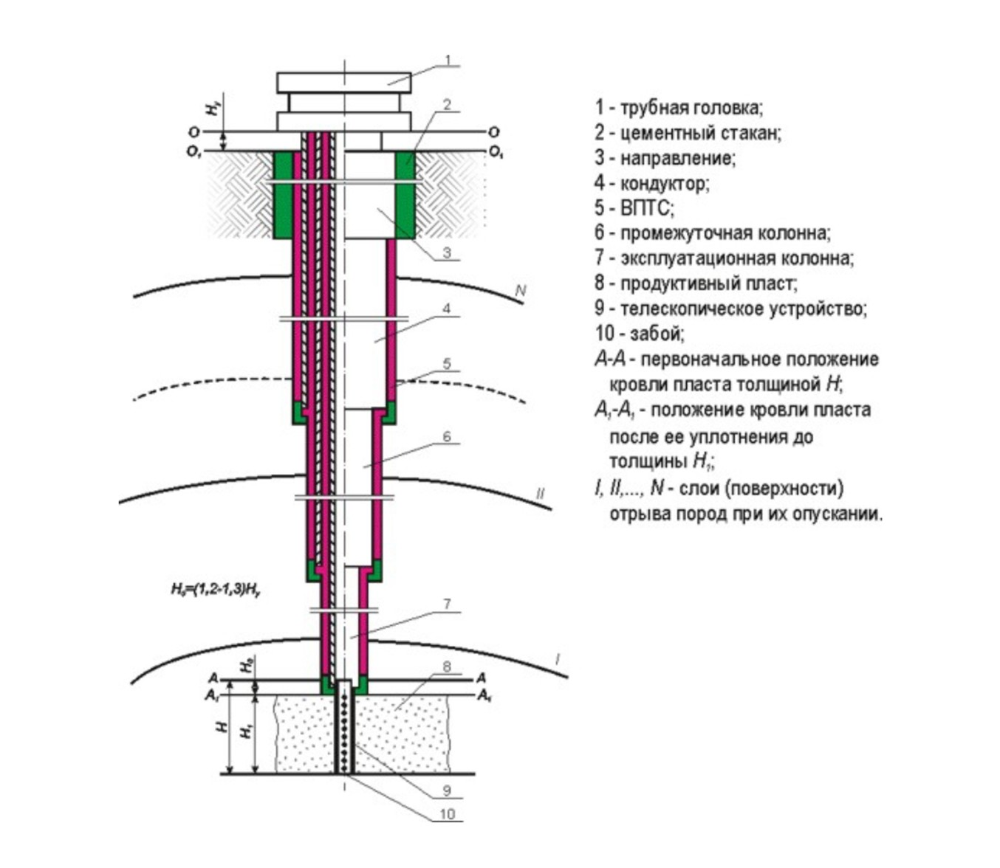
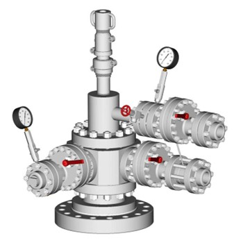
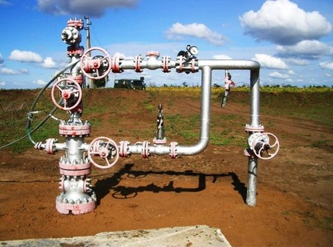

Разделы

Устья скажины
-
-

- Скважина состоит из трёх основных частей: устья, ствола и забоя. Устье - это верхняя часть скважины, которая предназначена для предотвращения обвалов и разрушений неплотных пород поверхностных слоёв, а также для защиты от размытия буровым раствором. Ствол определяет направление бурения и служит для удаления разрушенных пород из скважины. Забой служит для укрепления колонн на глубине и для добычи нефти из продуктивного пласта.
-
Схема устья
-

- Само устье нефтяной скважины являет собой комбинацию нескольких функциональных узлов:
- головка обсадной колонны;
- головка насосно-компрессорной колонны;
- фонтанная арматура.
- Все они являются важными составляющими.
- Головка обсадной колонны.
- Головка обсадной колонны – это соединяющее звено между обсадными конструкциями и разнообразным нефтяным устьевым оборудованием. Кроме этого, она:
- создает герметизацию пространства;
- держит массу технической колонны;
- удерживает эксплуатационную колонну.
- По мере того, как происходит бурение, рано или поздно возникает необходимость присоединения очередного звена обсадной колонны. Для этого предназначены специальные тяжелые фитинги. Они надеваются с применением узконаправленного оборудования, которое и крепится на головку обсадной колонны, которой оснащается устье буровой скважины.
- Данный элемент включает в себя захваты для удержания колоны, а также выполняет функцию по уплотнению обсадной конструкции, что позволяет как повысить её прочность, так и исключить неприятные явления вроде протечек или прорывов, устранение которых может занять немало времени.
- Это оборудование применяется не только когда происходит процесс бурения, но и во время комплексных восстановительных мер. В таком случае головка используется как приспособление для контроля давления.
- Постепенный монтаж тонких обсадных труб производится с использованием разнообразных адаптеров и регуляторов, а это означает, что противовыбросовый аппарат необходимо демонтировать и монтировать обратно каждый раз, как возникнет необходимость установки новой секции в скважину. Уже зафиксированные фланцы и втулки становятся единым целым с оборудованием нефтяной скважины.
-
Головка насосно-компрессорной колонны
-

- Обслуживание скважин обеспечивается целым комплексом структур, оборудования и элементов, к которым относится, и головка насосно-компрессорной – или рабочей – колонны. Она опирается на головку обсадной колонны и выполняет ряд следующих функций:
- Поддержка и фиксация. Головка удерживает насосно-компрессорную колонну в устойчивом положении, а также несколько снижает нагрузку на неё.
- Герметичное уплотнение. Разработка нефтяных скважин налагает определенные требования, среди которых отсутствие протечек или прорывов. Надежная герметизация позволяет снизить риски образования пробоев.
- Вывод управляющего оборудования. Патрубки регулирования жидкостных или газовых потоков выходят на поверхность именно через неё.
- Сама головка насосно-компрессорных труб идентична обсадным конструкциям с двойным фланцем. Для того, чтобы обеспечивать должную герметизацию, головка может иметь гнездо или специальную расточку для качественного уплотнения. Конструкция устья скважины должна позволять бесконфликтное размещение оборудования, поэтому продумывать его размещение следует заранее. Бурение также не должно влиять на функционирование аппаратуры, в противном случае возможно возникновения аварийных или, в случае добычи нефтяных залежей, небезопасных ситуаций.
- Фонтанная арматура
- Фонтанная арматура – это целая система механизмов и приспособлений, выполняющих ряд регулирующих и контролирующих функций. Почти каждая схема устья скважины, предназначенной для добычи нефти включает в себя фонтанную арматуру. Она представляет собой комплекс устройств, предназначенных для герметизации устья фонтанирующей скважины, подвески колонн лифтового назначения, а также для контроля и управления потоками. В состав элемента входят:
- колонная головка – связана с обсадной колонной;
- трубная головка – связана с лифтовыми колоннами;
- фонтанная ёлка – распределение и регулировка продукции.
- Из-за своей специфики, к этому оборудованию выдвигается ряд требований:
- способность выдерживать высокое давление;
- возможность проведения замеров давления;
- обеспечивать выпуск или закачку газа.
- Колонная головка, располагающаяся внизу арматуры фонтанного типа, необходима для осуществления подвешивания обсадных колонн, а также герметизации.
- Арматура фонтанная является важным элементом в случае нефтяных разработок, потому имеет собственный ГОСТ. В нем перечислены все типы ключевых схем, среди которых:
- манометрическая;
- вентильная;
- тройниковая;
- дроссельная.
- При выборе типа необходимо ориентироваться на условия будущей эксплуатации.
- Взаимодействие всех компонентов арматуры обеспечивается за счет разнообразных фланцев и хомутов, а подсоединение к трубопроводу осуществляется через манифольд. Присоединение должно проводиться по всем правилам, в противном случае возможно возникновение чрезвычайного происшествия.
- Коротко
- Схема устья нефтяной скважины включает следующие функциональные узлы:
- Головка обсадной колонны. Соединяет обсадные конструкции и устьевое оборудование, создаёт герметизацию пространства, держит массу технической колонны, удерживает эксплуатационную колонну. Головка насосно-компрессорной колонны.
- Идентична обсадным конструкциям с двойным фланцем. Может иметь гнездо или специальную расточку для качественного уплотнения. Фонтанная арматура. Система механизмов и приспособлений, выполняющих ряд регулирующих и контролирующих функций. В её состав входят колонная головка, трубная головка и фонтанная ёлка. Последняя распределяет и регулирует продукцию.
- Схема устья может меняться в зависимости от особенностей технологического процесса, применяемого в конкретный момент времени на скважине.